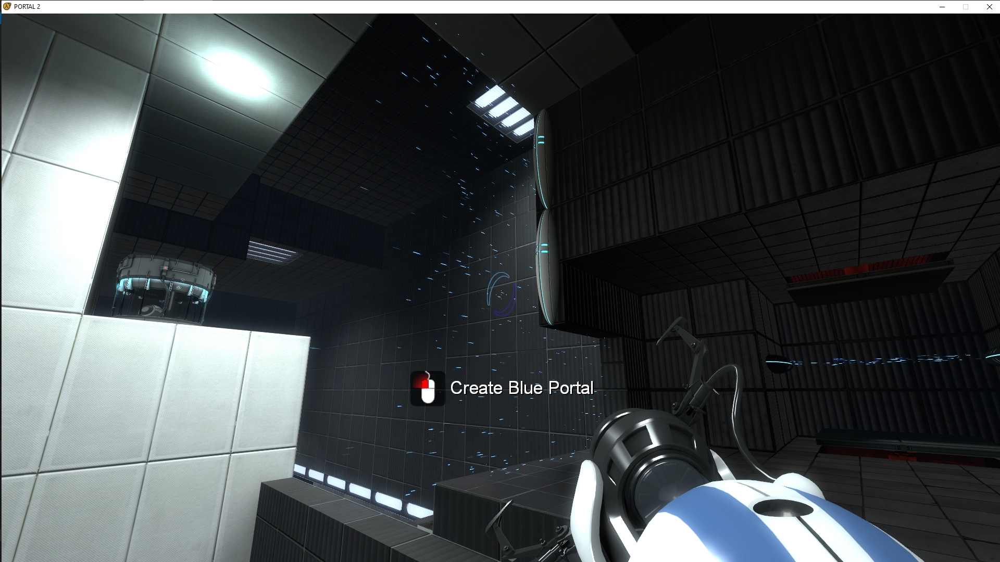

Narrative changes
A PSBR playthrough comparison reports that Caroline material heard in December had not yet appeared in the October 852_4 build.
PSBR ↗ · community discussion, not an official build changelog
Late-2010 revision that predates several story and presentation changes documented by the community.
A PSBR playthrough comparison reports that Caroline material heard in December had not yet appeared in the October 852_4 build.
PSBR ↗ · community discussion, not an official build changelog
The PSBR shared build listing identifies October as 852_4.
PSBR ↗ · community discussion, not an official build changelog
October 19's 852_4 build is a separate snapshot from September and December, not just a reupload or retitled December build.
The boss encounter was still changing, including hazard timings, scripting and the arena sequence. Footage from the October era illustrates the differences.
The build contains fragments of abandoned experiments and material not present in the release, such as earlier object and interaction implementations.
TCRF documents prototype-era interface and resource differences. Distinguish screenshots from the original depot from post-leak bugfixes.
These notes synthesize PSBR/VCC exported discussion and associated historical footage, not a Valve changelog. See the dated Hidden Palace prototype record ↗ for depot identification. Related-era video is not proof that every scene came from this exact revision.
Images below are direct references from the supplied Discord exports, not generated artwork. Signed Discord media links can expire; use the source-message links if a preview stops loading.
SECONDARY VISUAL RESEARCH: THE CUTTING ROOM FLOOR · BUILD ANALYSIS / SCREENSHOTS ↗ · HIDDEN PALACE · VERIFIED DEPOT RECORD ↗
